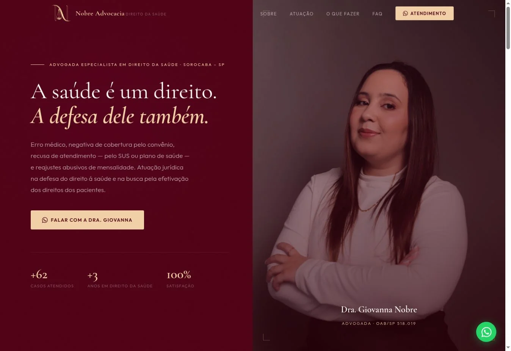
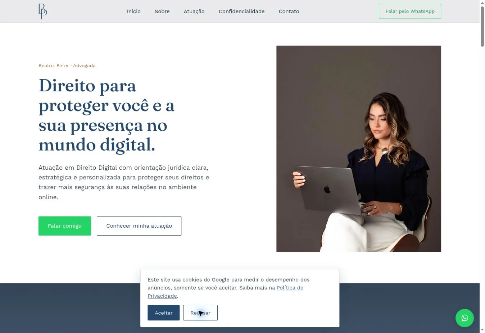
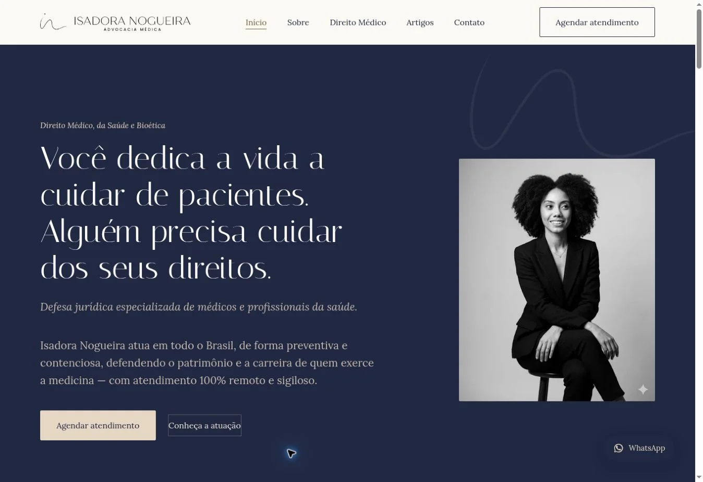

DISPONÍVEL PARA NOVOS PROJETOSSOROCABA, BR · —
O comumnão marca.
Sou Lucas Nobre. Transformo ideias em sites
que têm presença, movimento e propósito.
DESIGN & DESENVOLVIMENTO WEBROLE PARA DESCOBRIR ↓PORTFÓLIO / 2026
01 / PROJETOS SELECIONADOS
Trabalhos reais.
Identidades diferentes.
Cada marca,
um universo.(03)
Explorar site ↗

Beatriz Peter
Clareza e personalidade no universo digital.

Isadora Nogueira
Precisão, elegância e informação em equilíbrio.
02 / QUEM ESTÁ POR TRÁS
Prazer,
Lucas Nobre.
criar. experimentar. construir.
Entre uma boa ideia
e um site memorável,
existe atenção aos detalhes.
Sou desenvolvedor web em Sorocaba e estudante de Análise e Desenvolvimento de Sistemas. Crio sites para profissionais e negócios que querem apresentar seu trabalho com uma identidade própria.
Do primeiro esboço à última interação, conecto visual e desenvolvimento para construir uma experiência que faça sentido para cada marca.
Explore meu GitHub ↗HTML5CSS3JAVASCRIPTDESIGN RESPONSIVOINTERAÇÕES & MOVIMENTO
03 / DA IDEIA À EXPERIÊNCIA
Bonito de ver.
Simples de usar.
01
Identidade na tela
Cores, tipografia e composição que traduzem o seu negócio.
↗02
Movimento com intenção
Interações que dão ritmo à navegação e vida aos detalhes.
↗03
Do celular ao desktop
Uma experiência pensada para acompanhar cada tamanho de tela.
↗04 / SEU PRÓXIMO PROJETO VAMOS TIRAR DO PAPEL?
Agora é
a sua vez.
↗Tem uma ideia em mente?
Vamos criar algo que vale a visita.